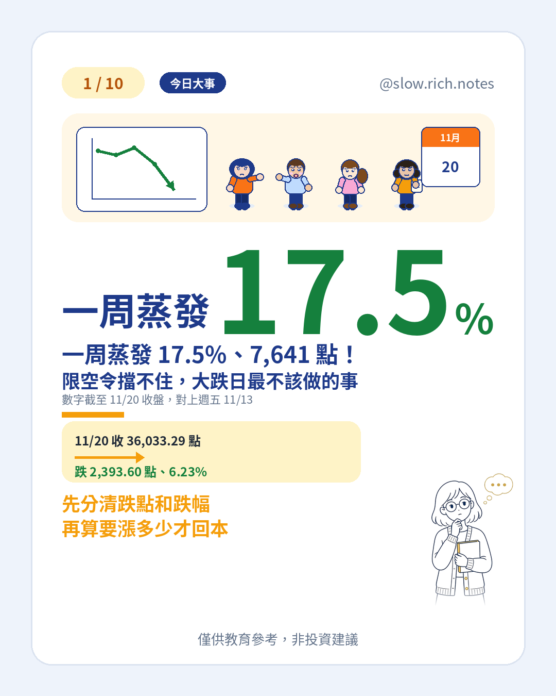

如果你現在看著帳戶，胸口有點緊，這很正常。一天少了兩千多點、一周少了約一成七，很容易想立刻做點什麼。先停一下：這篇不猜明天漲跌，也不叫你買或賣。只把 11/20 收盤的數字拆開，看大跌日最不該做的事。
今天收盤發生了什麼
加權指數收 36,033.29 點，跌 2,393.60 點、跌幅 6.23%。開盤 37,646.13 就是當天最高，最低 35,738.68。從昨收 38,426.89 算到這個低點，盤中最多跌過 2,688.21 點，尾盤回到 3 萬 6 附近。證交所市場成交總計 9,323.21 億元。這是收盤數字，不是盤中暫值。
跌點很大，不等於跌幅創紀錄
跌點是少了幾點，跌幅是少了百分之幾。指數已在三、四萬點，同樣的百分比換成點數就會很大。依證交所收盤跌點，前三名是 7/17 的 2,953.71 點（收 42,671.27）、11/16 的 2,635.04 點（收 41,040.08）、以及今天的 2,393.60 點。多家媒體因此寫「史上第三大收盤跌點」。點數排第三，跌幅仍是 6.23%，兩件事不要混在一起。跌多少才叫回檔、修正或熊市，可看回檔、修正和熊市差在哪。
這一周：五天跌了四天
跟上週五（11/13）收盤 43,675.12 比，一周少了 7,641.83 點，精確 17.50%。五個交易日跌四天，只有週三漲 102.80 點。單日點數很刺眼，這一周的百分比才看得出深度。
- 11/1641,040.08−2,635.04
- 11/1740,092.11−947.97
- 11/1840,194.91+102.80
- 11/1938,426.89−1,768.02
- 11/2036,033.29−2,393.60
- 四天收跌
- 一天收漲
上市股票 16 家上漲（漲停 4 家）、1,058 家下跌（跌停 179 家）、11 家持平。櫃買指數收 263.31，跌 22.02 點、跌幅 7.72%，成交 860.11 億元，比加權的 6.23% 更深。成交較薄的股票，急著賣時往往跌更重。權值最大的台積電收 2,000 元，跌 100 元、跌幅 4.76%，盤中最低 1,970；這裡只當指數背景，不是談這檔怎麼做。
跌了 X%，要漲 X÷(100−X) 才回本
報酬不是對稱的。跌了 X%，要回到原點，得再漲 X ÷ (100 − X)，不是再漲同一個 X%。今天跌 6.23%，2,393.60 ÷ 36,033.29 約 6.64%，要漲約 6.6% 才回到開跌前。本周跌 17.50%，7,641.83 ÷ 36,033.29 約 21.2%。從 10/6 收盤高點 49,822.55（盤中最高 49,968.92）算到今天，累跌 13,789.26 點、約 27.7%，漲回該收盤大約要 38.3%。這是數學，不是預測何時會漲回來，也不是叫你現在動作。
| 已經跌了 | 要漲回 |
|---|---|
| 今天 6.23% | 約 6.6% |
| 本周 17.50% | 約 21.2% |
| 自 10/6 的 27.7% | 約 38.3% |
跌 X%，要漲 X ÷ (100 − X)
限空令不是安全網
11/19 美股四大指數都跌超過 2%：道瓊 49,097.06（−1,101.11、−2.19%）、標普 7,175.83（−147.80、−2.02%）、那斯達克 23,879.20（−550.69、−2.25%）、費半 9,419.72（−233.07、約 −2.42%），台積電 ADR −2.90%。台股跳空開低，和隔夜走弱是同一天看到的事，不能單一一句定論，也不能保證明天。
金管會 11/19 宣布、11/20 上路的限空措施：個股收盤跌幅達 3.5% 以上，次一交易日不得低於前收盤放空；盤中借券賣出上限由前 30 日均量的 3% 降到 1%。規則當天有效，加權仍跌 2,393.60 點。政策改的是部分交易規則，不是保證指數不跌。
國安基金今天買了沒有、買多少，沒有官方當日明細，這裡不猜。先前談過國安基金是什麼：授權也不等於你的部位有人托住。不要把「有人護盤」或「不能隨便放空」當成自己的安全網。
大跌日先看這三件，另外三件別做
- 緊急預備金還在不在。生活和短期要用的錢，不要拿去跟市場對賭。
- 定期定額若本來就有計畫，照紀律走：不要因一天新聞停扣，也不要一次砸進很多個月的錢。可以看定期定額和單筆投入。
- 部位集中度。太壓在單一題材或少數幾檔，指數跌一截，帳戶會更有感。
不要因為恐慌一次賣光。不要借錢，也不要用融資攤平：跌愈多愈補，虧損被放大，補不出錢時股票可能被券商賣掉，可看融資斷頭是什麼。不要把「第三大跌點」當成明天一定反彈或一定再崩。
先分清跌了幾點、跌了幾 %，再用跌 X% 要漲 X÷(100−X) 算打平需要的漲幅。搞懂數字，比猜明天紅綠更重要。還在補基本功的話，可以免費領取《投資新手入門清單》。